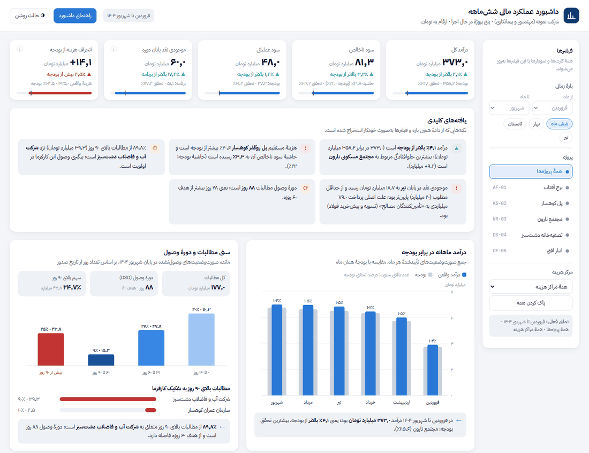
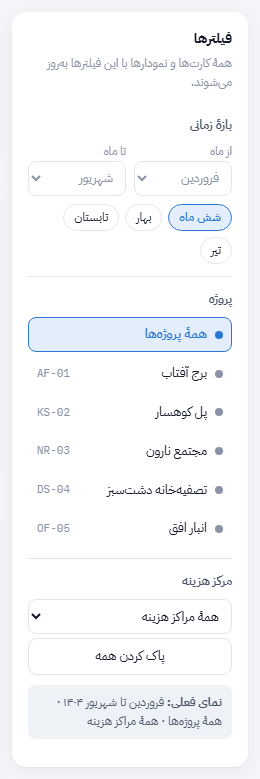
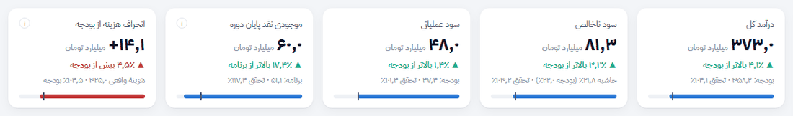
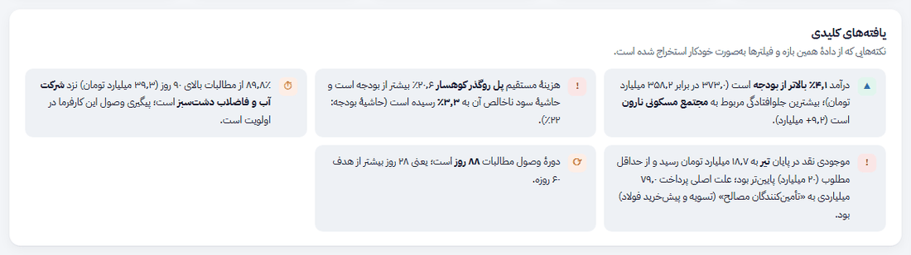
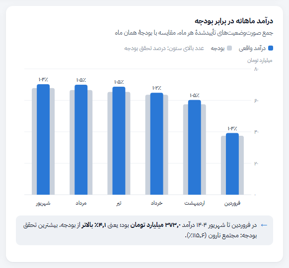
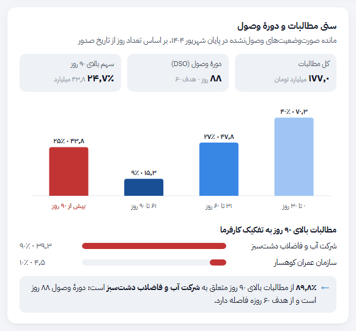
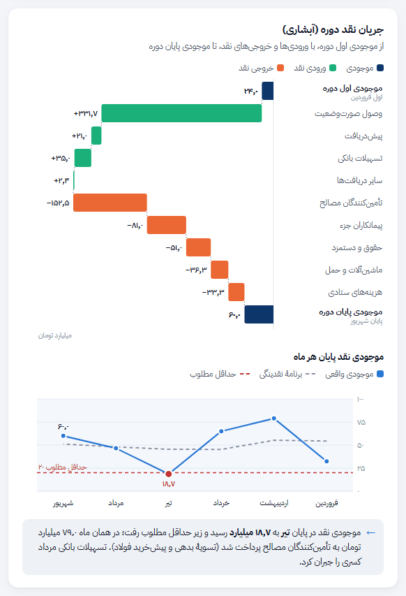
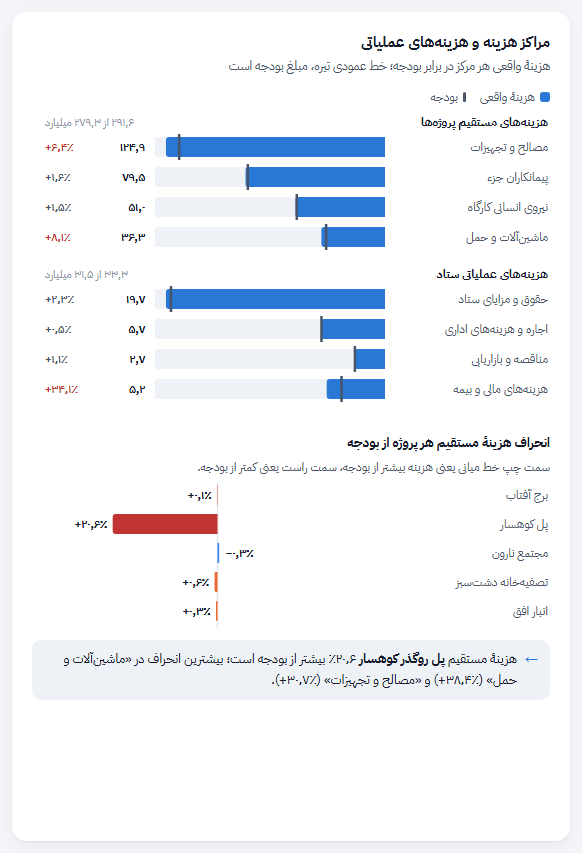
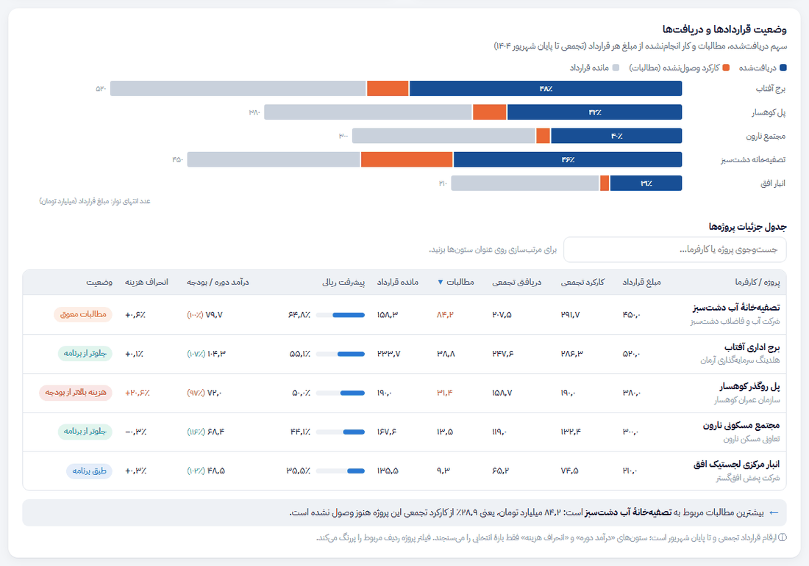
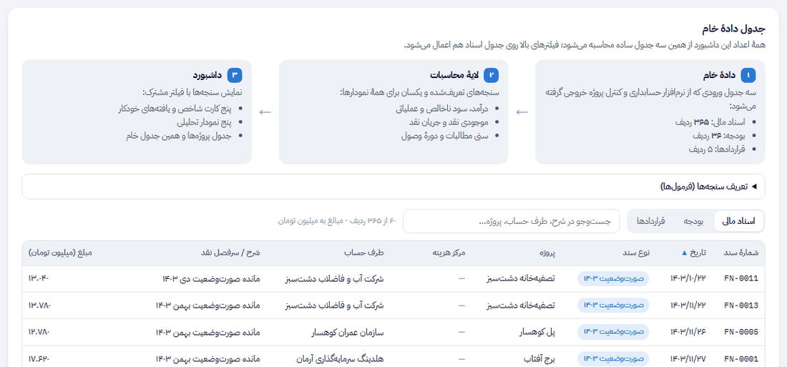

داشبورد عملکرد مالی ششماهه
این راهنما توضیح میدهد هر بخش داشبورد چه چیزی را نشان میدهد، چطور خوانده میشود و به چه پرسشی جواب میدهد. همهٔ اعدادی که در مثالها میبینید مستقیماً از دادهٔ همان داشبورد محاسبه شدهاند (نمای پیشفرض: شش ماه، همهٔ پروژهها).
۱در یک نگاه
«شرکت نمونه» یک شرکت مهندسی و پیمانکاری با پنج پروژهٔ در حال اجراست. این داشبورد در یک صفحه به مدیرعامل، مدیر مالی و هیئتمدیره نشان میدهد که شش ماه نخست سال ۱۴۰۴ از نظر مالی چطور گذشته است:
- درآمد و سود نسبت به بودجه کجا ایستاده است؟
- نقدینگی کافی بوده است و کجا تنگ شده است؟
- کدام کارفرما پول ما را دیر پرداخت میکند؟
- کدام پروژه بیش از بودجه هزینه کرده است؟
- هر قرارداد چقدر پیشرفت کرده و چقدر از آن وصول شده است؟

ساختار داشبورد سه لایه دارد: دادهٔ خام (اسناد مالی، بودجه و قراردادها) ← لایهٔ محاسبات (سنجههای تعریفشده) ← نمایش. به همین دلیل هر عدد قابل ردیابی است و با اضافه شدن دادهٔ ماه بعد، کل داشبورد بدون تغییر دستی بهروز میشود.
۲شروع سریع
- کارتها را مرور کنید. پنج کارت بالای صفحه در چند ثانیه میگویند وضعیت کلی در برابر بودجه چیست؛ سبز یعنی بهتر از بودجه و قرمز یعنی بدتر.
- یافتهها را بخوانید. کادر «یافتههای کلیدی» مهمترین نکتهها را با جملهٔ ساده و عدد دقیق میگوید؛ از همینجا بفهمید کدام نمودار را باید دقیقتر دید.
- با فیلتر عمیق شوید. یک پروژه یا ماه را انتخاب کنید تا همهٔ بخشها روی همان برش تمرکز کنند. با نگه داشتن نشانگر روی هر ستون، جزئیات دقیق را ببینید.
۳فیلترها

سه فیلتر وجود دارد و انتخابها همزمان روی همهٔ بخشها اعمال میشود. کادر «نمای فعلی» زیر فیلترها همیشه میگوید چه چیزی را میبینید و «پاک کردن همه» داشبورد را به نمای ششماهه برمیگرداند.
- بازهٔ زمانی: ماه شروع و پایان، یا میانبرهای «شش ماه»، «بهار»، «تابستان» و «تیر».
- پروژه: یکی از پنج پروژه یا همهٔ پروژهها.
- مرکز هزینه: مصالح، پیمانکاران جزء، نیروی انسانی، ماشینآلات یا هزینههای ستاد.
کدام فیلتر روی کدام بخش اثر دارد؟
| بخش | بازهٔ زمانی | پروژه | مرکز هزینه |
|---|---|---|---|
| درآمد، سود ناخالص، سود عملیاتی | ✓ | ✓ | — |
| موجودی نقد پایان دوره (کارت) | ✓ | — سطح شرکت | — |
| انحراف هزینه از بودجه (کارت) | ✓ | ✓ | ✓ |
| یافتههای کلیدی | ✓ | ✓ | بخشی |
| درآمد ماهانه در برابر بودجه | ✓ پررنگسازی | ✓ | — |
| سنی مطالبات و DSO | ✓ تا پایان بازه | ✓ | — |
| جریان نقد آبشاری | ✓ | ✓ فقط جریان پروژه | — |
| موجودی نقد پایان هر ماه | ✓ پررنگسازی | — سطح شرکت | — |
| مراکز هزینه و انحراف پروژهها | ✓ | ✓ | ✓ |
| وضعیت قراردادها | ✓ تجمعی تا پایان بازه | ✓ پررنگسازی | — |
| جدول دادهٔ خام (اسناد) | ✓ | ✓ | ✓ |
هرجا فیلتری اثر ندارد، زیر همان نمودار یک یادداشت کوچک با نشانهٔ ⓘ دلیلش را توضیح میدهد؛ مثلاً درآمد به مرکز هزینه تقسیم نمیشود و موجودی بانک متعلق به کل شرکت است، نه یک پروژه.
مشاهدهٔ فیلترها در داشبورد ←۴کارتهای شاخص

چه چیزی نشان میدهد؟
درآمد کل، سود ناخالص، سود عملیاتی، موجودی نقد پایان دوره و انحراف هزینه از بودجه. همهٔ مبالغ به میلیارد تومان است.
چطور بخوانیم؟
عدد بزرگ مقدار واقعی است. خط زیر آن با ▲ یا ▼ فاصله از بودجه را نشان میدهد؛ رنگ سبز یعنی به نفع شرکت و قرمز یعنی به ضرر شرکت (در کارت هزینه، افزایش هزینه قرمز است). نوار پایین کارت درصد تحقق بودجه است و خط عمودی کوچک روی آن نقطهٔ ۱۰۰٪ را نشان میدهد.
۵یافتههای کلیدی

این کادر پنج جملهٔ کوتاه دارد که از همان محاسبات داشبورد ساخته میشوند و با تغییر فیلترها بازنویسی میشوند. نشانهٔ رنگی کنار هر جمله نوع آن را میگوید: سبز خبر خوب، نارنجی نیازمند پیگیری و قرمز هشدار.
۶درآمد ماهانه در برابر بودجه

چه چیزی نشان میدهد؟
درآمد هر ماه یعنی جمع صورتوضعیتهای تأییدشدهٔ آن ماه. ماهها از راست به چپ (فروردین در سمت راست) چیده شدهاند.
چطور بخوانیم؟
اگر ستون آبی از ستون خاکستری بلندتر باشد، آن ماه از بودجه جلوتر بودهایم. عدد بالای هر ستون درصد تحقق بودجه است. ماههایی که خارج از بازهٔ انتخابیاند کمرنگ میشوند تا زمینهٔ مقایسه از دست نرود.
۷سنی مطالبات و دورهٔ وصول

چه چیزی نشان میدهد؟
صورتوضعیتهایی که صادر شدهاند ولی هنوز کامل وصول نشدهاند، بر اساس تعداد روزی که از صدورشان گذشته در چهار دسته: ۰ تا ۳۰، ۳۱ تا ۶۰، ۶۱ تا ۹۰ و بیش از ۹۰ روز. وضعیت در پایان آخرین ماه بازه سنجیده میشود.
چطور بخوانیم؟
هرچه سهم ستون قرمز (بیش از ۹۰ روز) بیشتر باشد، ریسک وصول بالاتر است. «دورهٔ وصول (DSO)» میگوید بهطور متوسط چند روز طول میکشد تا درآمد به پول نقد تبدیل شود؛ هدف شرکت ۶۰ روز است.
۸جریان نقد (آبشاری) و موجودی ماهانه

چه چیزی نشان میدهد؟
نمودار آبشاری از موجودی نقد اول دوره شروع میکند، ورودیهای نقد را به تفکیک نوع (وصول صورتوضعیت، پیشدریافت، تسهیلات بانکی، سایر) اضافه و خروجیها را به تفکیک نوع (مصالح، پیمانکاران جزء، حقوق، ماشینآلات، هزینههای ستادی) کم میکند تا به موجودی پایان دوره برسد. نمودار خطی زیر آن موجودی پایان هر ماه را با برنامهٔ نقدینگی و خط حداقل مطلوب (۲۰ میلیارد تومان) مقایسه میکند.
چطور بخوانیم؟
نوارهای سبز پول را بالا میبرند و نارنجیها پایین. نوار تیره در ابتدا و انتها موجودی است. در نمودار خطی، هر نقطهٔ قرمز یعنی موجودی آن ماه زیر حداقل مطلوب رفته است.
۹مراکز هزینه و انحراف پروژهها

چه چیزی نشان میدهد؟
بخش بالا هزینهها را در دو گروه نشان میدهد: هزینههای مستقیم پروژهها (چهار مرکز هزینه) و هزینههای عملیاتی ستاد. هر گروه مقیاس جداگانه دارد چون هزینههای ستاد بسیار کوچکترند. بخش پایین درصد انحراف هزینهٔ مستقیم هر پروژه از بودجه را نشان میدهد.
چطور بخوانیم؟
اگر نوار آبی از خط عمودی تیره (بودجه) جلوتر برود، آن مرکز بیش از بودجه خرج کرده است. عدد سمت چپ هر ردیف درصد انحراف است؛ قرمز یعنی بیش از ۳٪ بالاتر از بودجه. در نمودار پایین، نوار رو به چپ یعنی هزینهٔ بیشتر از بودجه.
۱۰وضعیت قراردادها و دریافتها

چه چیزی نشان میدهد؟
طول هر نوار متناسب با مبلغ قرارداد است و سه بخش دارد: آبی تیره، مبلغی که از کارفرما دریافت شده؛ نارنجی، کاری که انجام و صورتوضعیت شده ولی هنوز پولش نرسیده؛ خاکستری، بخشی از قرارداد که هنوز اجرا نشده است. ارقام تجمعی و از ابتدای قرارداد است.
چطور بخوانیم؟
در جدول، با زدن روی عنوان هر ستون مرتبسازی کنید و با کادر جستوجو پروژه یا کارفرما را پیدا کنید. ستون «وضعیت» برچسب خودکار دارد: «هزینه بالاتر از بودجه» (انحراف بیش از ۱۰٪)، «مطالبات معوق» (بیش از ۳۰٪ مطالبات بالای ۹۰ روز)، «جلوتر از برنامه» و «طبق برنامه».
۱۱جدول دادهٔ خام

این بخش نشان میدهد داشبورد روی چه دادهای ساخته شده است. سه جدول ورودی داریم:
- اسناد مالی ( ردیف): هر ردیف یک سند است با نوع صورتوضعیت، دریافت، هزینه یا پرداخت؛ همراه با تاریخ، پروژه، مرکز هزینه، طرف حساب و مبلغ به میلیون تومان.
- بودجه ( ردیف): بودجهٔ ماهانهٔ درآمد و هزینه برای هر پروژه و ستاد.
- قراردادها (۵ ردیف): مبلغ قرارداد، کارفرما و کارکرد تا پایان ۱۴۰۳.
همهٔ سنجهها فقط یک بار در لایهٔ محاسبات تعریف شدهاند (فرمولها در بخش «تعریف سنجهها» داخل داشبورد آمده است) و همهٔ نمودارها از همان تعریف استفاده میکنند؛ پس دو نمودار هیچوقت عدد متفاوت برای یک مفهوم نشان نمیدهند. برای بهروزرسانی ماه بعد کافی است اسناد جدید به جدول اول اضافه شود.
۱۲پرسشهای رایج
چرا موجودی نقد با فیلتر پروژه تغییر نمیکند؟
حساب بانکی متعلق به کل شرکت است و بین پروژهها تقسیم نمیشود. با فیلتر پروژه، نمودار آبشاری فقط دریافتها و پرداختهای همان پروژه و خالص آنها را نشان میدهد، اما کارت موجودی و نمودار موجودی ماهانه در سطح شرکت میمانند.
سود عملیاتی یک پروژه چطور حساب میشود؟
هزینههای ستاد به پروژهٔ خاصی تعلق ندارد. وقتی پروژهای را فیلتر میکنید، سهم آن پروژه از هزینهٔ ستاد به نسبت درآمدش تخصیص داده میشود و از سود ناخالص کم میشود. این روش در کارت سود عملیاتی با ⓘ توضیح داده شده است.
چرا درآمد بالاتر از بودجه است ولی سود عملیاتی تقریباً هماندازهٔ بودجه است؟
دو عامل جلوتر بودن فروش را خنثی کردهاند: افزایش هزینهٔ پروژهٔ پل کوهسار و هزینههای مالی تسهیلات مرداد. کارت «انحراف هزینه از بودجه» و بخش مراکز هزینه همین را نشان میدهند.
سنی مطالبات وقتی بازهٔ «بهار» را انتخاب میکنم چه نشان میدهد؟
مطالبات همیشه یک «عکس لحظهای» است؛ با انتخاب بهار، وضعیت در پایان خرداد نشان داده میشود و DSO با درآمد همان سه ماه محاسبه میشود.
آیا میشود داشبورد را به دادهٔ واقعی شرکت وصل کرد؟
بله. کافی است خروجی اسناد، بودجه و قراردادها از نرمافزار حسابداری در همان قالب سه جدول آماده شود؛ لایهٔ محاسبات و نمودارها بدون تغییر کار میکنند.
۱۳واژهنامه
- صورتوضعیت
- صورتحساب دورهای پیمانکار به کارفرما برای کار انجامشده؛ در این داشبورد مبنای شناسایی درآمد است.
- سود ناخالص
- درآمد منهای هزینههای مستقیم پروژهها (مصالح، پیمانکاران جزء، نیروی انسانی کارگاه، ماشینآلات).
- سود عملیاتی
- سود ناخالص منهای هزینههای ستاد مرکزی (حقوق ستاد، اداری، مناقصه، مالی و بیمه).
- درصد تحقق بودجه
- مقدار واقعی تقسیم بر مقدار بودجه؛ ۱۰۰٪ یعنی دقیقاً مطابق بودجه.
- مطالبات
- مبلغ صورتوضعیتهایی که صادر شده ولی هنوز وصول نشده است.
- سنی مطالبات
- دستهبندی مطالبات بر اساس تعداد روزی که از صدور صورتوضعیت گذشته است.
- دورهٔ وصول (DSO)
- مطالبات پایان دوره ÷ درآمد دوره × تعداد روزهای دوره؛ میانگین روزهای تبدیل درآمد به نقد.
- پیشدریافت
- مبلغی که کارفرما پیش از انجام کار پرداخت میکند و بعداً از صورتوضعیتها کسر میشود.
- نمودار آبشاری
- نموداری که نشان میدهد یک مقدار آغازین با افزایشها و کاهشهای پیدرپی چطور به مقدار پایانی میرسد.
- برنامهٔ نقدینگی
- موجودی نقد پیشبینیشده در پایان هر ماه بر اساس بودجهٔ درآمد و هزینه و الگوی معمول وصول.
- پیشرفت ریالی
- کارکرد تجمعی تقسیم بر مبلغ قرارداد.